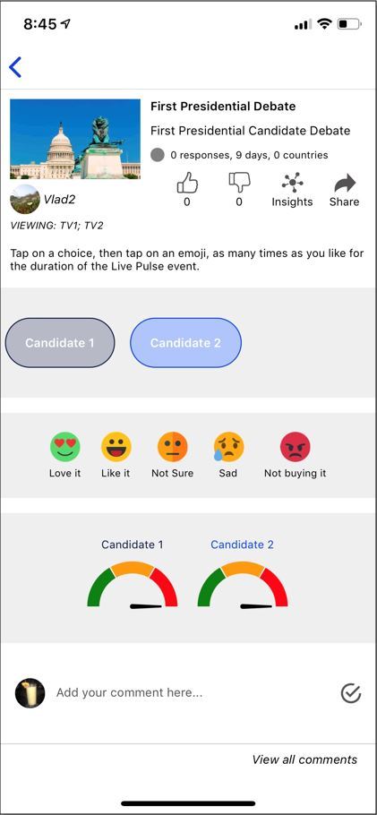

<div style="display: flex;justify-content: center">
  <ngb-carousel class="subMenuContext" *ngIf="!isHandset" #carousel interval="false" >
    <ng-template ngbSlide>
      <div  style="display: flex; margin-left: 120px;">
        <div >
          
        </div>
        <div style="width: 868px;margin-top: 183px;">
          <div style="margin-left: 26px;width: 505px;" >At the scheduled time and as the event is about to start, come back to the Live Pulse listing page and select the specific Live Pulse. This will take you to the Live Pulse participation page.</div>
          <div>
            <div class="headerSubMenu enjoyingStyleButtonText" style="margin-top: 71px;">Select a participant. </div>
            <div class="headerSubMenu enjoyingStyleButtonText" style="margin-top: 43px; width: 681px;">Tap an emoji to express an emotion during the live event.
              Repeat as often as you like for each participant.
            </div>
            <div class="headerSubMenu enjoyingStyleButtonText" style="margin-top: 43px;">Watch what the world thinks in real-time. </div>
            <div class="headerSubMenu enjoyingStyleButtonText" style="margin-top: 62px;">Add comments as often as you like. </div>
          </div>
        </div>
      </div>
    </ng-template>
  </ngb-carousel>
</div>
